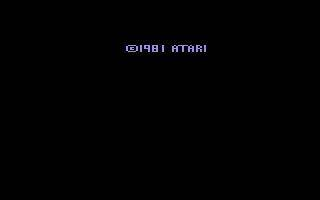
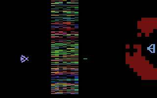

Switch Online
Official option
Some Game Boy Color games have been part of Nintendo Switch Online. Confirm this title is still in the current library. Where to Play does not host this game.
Nintendo Switch Online overview Official site
Image from this RAWG record. Powered by RAWG.
Yars' Revenge is a 1982 release on Game Boy Color. RAWG files it among mixed styles.
This catalog keeps it on Game Boy Color. Any later re-release is a different page when it is a separate game, not a guess about a current listing.
Yars' Revenge is recorded here as a 1982 game. The lead system is Game Boy Color, 5th generation, color handheld. Game Boy Color is the color follow-up to Game Boy. It plays many older Game Boy cartridges and adds color-native games. Every other Game Boy Color game in this catalog is on the Game Boy Color page.
This slug names Game Boy Color only. RAWG sometimes tags the same record on other hardware. Those tags are not copied here unless this catalog treats them as the same Nintendo release.
The credit chip on this page reads See the RAWG record. RAWG lists no developer name and no publisher name. If those names disagree with the chip, both stay on the page so the record can be checked.
RAWG does not list genres on this record. The page does not invent any.
The date field is 1982-05-01; the user rating is 0.00 out of 5 from 3 ratings. Those fields belong to RAWG. This page does not add a score of its own.
Yars' Revenge is not grouped under one of the series names this catalog matches by title. The related links then point at other Game Boy Color games from nearby years, and at games that share the first RAWG developer when one is listed.
RAWG's own platform list for this record is game-boy-advance, game-boy-color, atari-2600, atari-flashback. This catalog keeps only the Nintendo systems named above. A personal computer, or another company's console, on that list is not a claim that this page covers that version.
The year 1982 is the date on the RAWG record. It is earlier than this Nintendo hardware, so it should not be read as the Nintendo release year. The RAWG grid below keeps that date for checking.
Related games are ordinary links inside this catalog: same series, same franchise, the same Nintendo system, and the same developer when RAWG names one. They are for browsing. Nothing in those lists is for sale, and none of them is a copy of the game.
The official-option note further down names a public Nintendo page when this catalog has one, and it asks you to confirm the title is still offered. Where to Play does not host this game.
Same series is the tight name match. Same franchise is the wider family. Same platform is other games on the systems named above.
None in this catalog yet.
No wider family is grouped for this title beyond the series list.
Facts in this grid are RAWG's, not our review. Open the RAWG record. RAWG.


Screenshots from this RAWG record. Powered by RAWG.
Some Game Boy Color games have been part of Nintendo Switch Online. Confirm this title is still in the current library. Where to Play does not host this game.
Nintendo Switch Online overview Official siteWe don't host this game. Confirm the title is still offered before you rely on a library note.